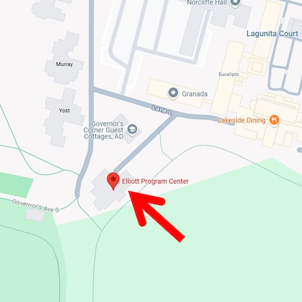
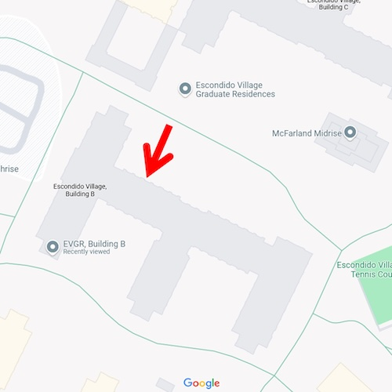
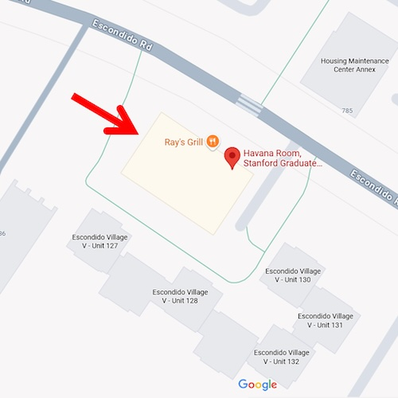
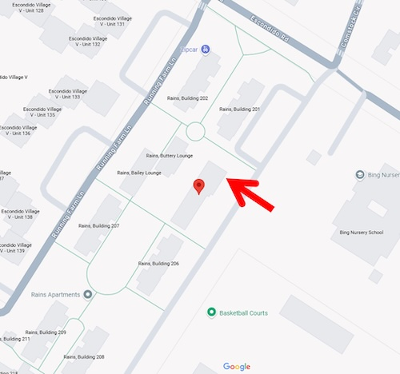
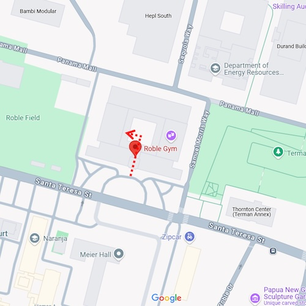

Austria Fortnight Classes
What is the Austria Fortnight?
To help everyone get into the spirit of social dance, our Austria Fortnight classes are 14 informal dance lessons at Stanford’s campus in the two weeks before the Viennese Ball. These classes are free and open to the public, and you can attend as many as you’d like! The Austria Fortnight is kicked off by the Bon Bon Ball, a social dance event that you can learn more about here! This year, Austria Fortnight will include daily classes from February 13th to 20th.
Please bring water and wear comfortable clothing (most people wear athletic wear) and socks or dance shoes that you can move easily in. Classes will begin promptly at the indicated time and progress quickly, so be sure to arrive a few minutes early to get the most out of them! No partner necessary, we will rotate partners often!
Classes are 2 hours long with open social dancing to practice for the rest of the time. Feel free to show up to the social dancing portion of any of the classes as well!
Recap videos of last year’s lessons may be found here afterwards.
Austria Fortnight Schedule
| Date | Beginner Lesson | Intermediate / Advanced Lesson | Social Dancing Practice |
|---|---|---|---|
| 2/13 | 7:30–9 PM: Beginner Rotary Waltz Roble Gym R115 Bon Bon Ball Ticket required |
7–9 PM: Intermediate Bohemian National Polka Prerequisite: comfort with rotary waltz or polka basic Roble Gym R113 Bon Bon Ball Ticket required |
9–11:45 PM: Bon Bon Ball! Roble Gym R113 Bon Bon Ball Ticket required |
| 2/14 | 1–3 PM: Beginner Lindy Hop “Are You Hep to the Jive?” Roble Gym R113 |
1–3 PM: Intermediate Lindy Hop “Tain’t What You Do” Prerequisite: SSD foundations series, History of Swing, or Social Dance II Roble Gym R114 |
3–4 PM: DJ’d Lindy Hop Social Dancing Roble Gym R113 |
| 2/15 | 6–7:30 PM: Beginner Polka Roble Gym R115 |
6–7:30 PM: Intermediate Rotary Waltz Prerequisite: comfort with rotary waltz basic Roble Gym R116 (RAG-Studio) |
7:30–8 PM: DJ’d Rotary Waltz and Polka Social Dancing Roble Gym R115 |
| 2/16 | 8:30–10:30 PM: Beginner Cross-Step Waltz Roble Gym R113 |
8:30–10:30 PM: Intermediate Cross-Step Waltz Prerequisite: comfort with cross-step waltz basic Koret Pavilion |
10:30–11:30 PM: DJ’d Cross-Step Waltz Social Dancing Roble Gym R113 |
| 2/17 | 7:30–9:30 PM: Beginner Lindy Hop “Sing Me a Swing Song and Let Me Dance” Roble Gym R115 |
6:45–8:45 PM Intermediate Lindy Hop “Let Yourself Go” Prerequisite: SSD foundations series, History of Swing, or Social Dance II A3C Ballroom |
9:30–11 PM: DJ’d Lindy Hop Social Dancing Roble Gym R115 |
| 2/18 | 7–8:30 PM: Beginner Tango Roble Gym R113 |
— | 9:30–11 PM: DJ’d Tango Social Dancing Roble Gym R113 |
| 2/19 |
7–9 PM: Beginner Bachata Rains Hacienda Brando Miranda & Lorena 9–10:30 PM: Bachata Social (Following the bachata class) Rains Hacienda 7–9 PM: Beginner Salsa (2 hours) Roble Gym R113 |
— | 9–9:45 PM: DJ’d Salsa Social Dancing Roble Gym 116 (RAG) |
| 2/20 | 7–9 PM: Beginner Rotary Waltz Roble Gym R115 |
7–9 PM: Intermediate Rotary Waltz Musicality Prerequisite: Comfortable with Rotary Waltz Basic Roble Gym R113 |
9–10 PM: DJ’d Rotary Waltz Social Dancing Roble Gym R113 |
| 2/21 | 7:30–9:30 PM: Beginner West Coast Swing "Passes, Push, and Tuck" Roble Gym R113 |
7:30–9:30 PM: Intermediate West Coast Swing Prerequisite: 2 Cardinal Swing fundamentals classes or equivalent off-campus Roble Gym R114 |
9:30–10:30 PM: DJ’d West Coast Swing Social Dancing Roble Gym R113 |
| 2/22 | 6–7:30 PM: Beginner Cross-Step Waltz Roble Gym R115 |
6–7:30 PM: Intermediate Cross-Step Waltz Prerequisite: comfort with cross-step waltz basic Roble 116 (RAG-Studio) |
7:30–8 PM: DJ’d Cross-Step Waltz Social Dancing: Roble Gym R115 |
| 2/23 | 7–9 PM: Beginner West Coast Swing "Passes, Push, and Vibing in Tension" Roble Gym R115 |
7–9 PM: Advanced West Coast Swing Prerequisite: 4 Cardinal Swing fundamentals classes or equivalent off-campus Roble Gym R116 - RAG |
9–10 PM: DJ’d Social Dancing (All styles, open to all) Roble Gym R115 |
| 2/24 | 7:30–9:30 PM: Beginner Lindy Hop – “Laughin’ In Rhythm” Roble Gym 115 |
6:45–8:45 PM: Intermediate Lindy Hop – “Jump Session” Prerequisite: Completion of SSD Foundations Series, History of Swing, or Social Dance II A3C Ballroom |
9:30–11 PM: DJ’d Lindy Hop Social Dancing Roble Gym R115 |
| 2/25 | 7–9 PM: Beginner Rotary Waltz GCC Havana |
— | 9–10 PM: DJ’d Rotary Waltz Social Dancing GCC Havana |
| 2/26 | 7–8 PM: Beginner Solo Jazz Rains Hacienda |
— | 8–10 PM: DJ’d Waltz, Lindy Hop, and West Coast Swing Social! Free snacks and meet the leadership of Social Dance VSOs! Rains Hacienda |
| 2/27 | Stanford Viennese Ball! | Stanford Viennese Ball! | Stanford Viennese Ball! |
Locations
| Elliott Program Center | Google Maps |  |
| EVGR B Yoga Room (Room 140) |
Google Maps |  |
| EVGR C Dance Studio (Room 153) |
Google Maps |  |
| GCC Havana | Google Maps |  |
| Rains Hacienda | Google Maps |  |
| Roble Gym R113 R114 R115 |
Google Maps |  |
What does beginner or intermediate mean?
Beginner classes will take you from the basic steps of the dance style through some basic moves and allow you to get in lots of practice! Intermediate classes will go more quickly through the basics and move on to teaching different variations of the style to add to your repertoire. All classes are open to everyone regardless of experience – excited to see you there!
Resources
Here are some useful links to recap and learn more!
Library of Dance Demo Videos:
Recap Videos: